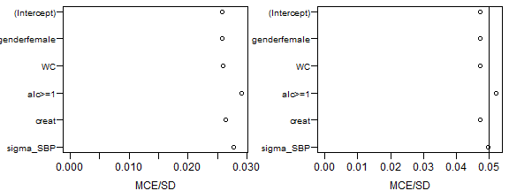
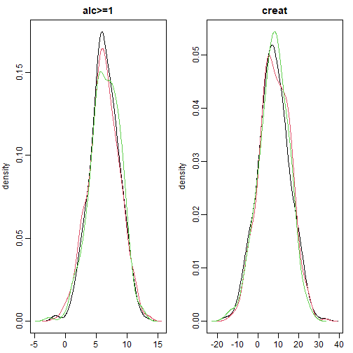
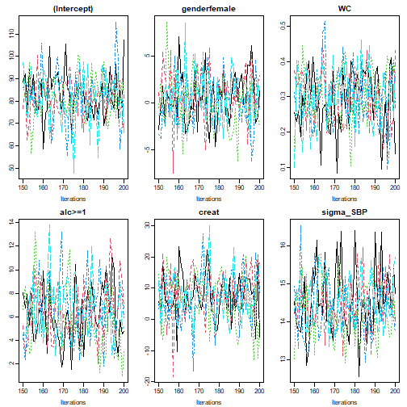
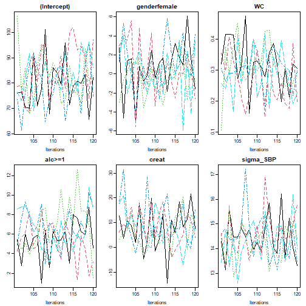
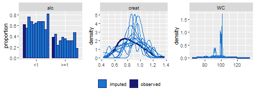

After Fitting
Summary, visualization and evaluation of the results
2020-06-22
Source:vignettes/AfterFitting.Rmd
AfterFitting.RmdThis vignette describes how the results from a JointAI
model can be visualized, summarized and evaluated. We use the NHANES
data for examples in cross-sectional data and the dataset simLong
for examples in longitudinal data. For more info on these datasets,
check out the vignette Visualizing
Incomplete Data, in which the distributions of variables and
missing values in both sets is explored.
The functions described in this section use, by default, the full
MCMC sample and show only the parameters of the analysis model. A number
of arguments are available to select a subset of the MCMC samples that
is used to calculate the summary. The argument subset
allows controlling which part of the MCMC sample is returned and follows
the same logic as the argument monitor_params
in *_imp().
The use of these arguments is further explained below.
Visualizing the posterior sample
The posterior sample can be visualized by two commonly used plots: a trace plot, showing samples across iterations, or a plot of the empirical density of the posterior sample.
Trace plot
A trace plot shows the sampled values per chain and node throughout
iterations. It allows us to evaluate convergence and mixing of the
chains visually, and can be obtained with the function traceplot():
mod13a <- lm_imp(SBP ~ gender + WC + alc + creat, data = NHANES, n.iter = 500,
seed = 2020)
traceplot(mod13a)
When the sampler has converged the chains show one horizontal band,
as in the above figure. Consequently, when traces show a trend
convergence has not been reached and more iterations are necessary
(e.g., using add_samples()).
Graphical aspects of the traceplot can be controlled by specifying
standard graphical arguments via the dots argument "...",
which are passed to matplot().
This allows changing colour, line type and -width, limits, and so forth.
Arguments nrow and/or ncol can be supplied to
set specific numbers of rows and columns for the layout of the grid of
plots.
With the argument use_ggplot it is possible to get a ggplot2
version of the traceplot. It can be extended using standard
ggplot2 syntax.
library(ggplot2)
traceplot(mod13a, ncol = 3, use_ggplot = TRUE) +
theme(legend.position = 'bottom') +
scale_color_brewer(palette = 'Dark2')
Density plot
The posterior distributions can also be visualized using the function
densplot(),
which plots the empirical density per node per chain, or combining
chains (when joined = TRUE).
The argument vlines takes a list of lists, containing
specifications passed to abline, and allows us to add
(vertical) lines to the plot, e.g., marking zero:
densplot(mod13a, ncol = 3, col = c("darkred", "darkblue", "darkgreen"),
vlines = list(list(v = c(rep(0, length(coef(mod13a)$SBP)), NA),
col = grey(0.8)))) or marking the posterior mean and 2.5% and 97.5% quantiles:
or marking the posterior mean and 2.5% and 97.5% quantiles:
res <- rbind(summary(mod13a)$res$SBP$regcoef[, c('Mean', '2.5%', '97.5%')],
summary(mod13a)$res$SBP$sigma[, c('Mean', '2.5%', '97.5%')])
densplot(mod13a, ncol = 3,
vlines = list(list(v = res[, 'Mean'], lty = 1,
lwd = 2),
list(v = res[, "2.5%"], lty = 2),
list(v = res[, "97.5%"], lty = 2)
)
)
Like with traceplot() it is possible to use the
ggplot2 version of densplot() when setting
use_ggplot = TRUE. Here, vertical lines can be added as
additional layers:
# fit the complete-case version of the model
mod13a_cc <- lm(formula(mod13a), data = NHANES, na.action = na.omit)
# make a dataset containing the quantiles of the posterior sample and
# confidence intervals from the complete case analysis:
quantDF <- rbind(data.frame(variable = rownames(summary(mod13a)$res$SBP$regcoef),
type = '2.5%',
model = 'JointAI',
value = summary(mod13a)$res$SBP$regcoef[, c('2.5%')]
),
data.frame(variable = rownames(summary(mod13a)$res$SBP$regcoef),
type = '97.5%',
model = 'JointAI',
value = summary(mod13a)$res$SBP$regcoef[, c('97.5%')]
),
data.frame(variable = names(coef(mod13a_cc)),
type = '2.5%',
model = 'cc',
value = confint(mod13a_cc)[, '2.5 %']
),
data.frame(variable = names(coef(mod13a_cc)),
type = '97.5%',
model = 'cc',
value = confint(mod13a_cc)[, '97.5 %']
)
)
# ggplot version:
p13a <- densplot(mod13a, use_ggplot = TRUE, joined = TRUE) +
theme(legend.position = 'bottom')
# add vertical lines for the:
# - confidence intervals from the complete case analysis
# - quantiles of the posterior distribution
p13a +
geom_vline(data = quantDF, aes(xintercept = value, color = model),
lty = 2) +
scale_color_manual(name = 'CI from model: ',
limits = c('JointAI', 'cc'),
values = c('blue', 'red'),
labels = c('JointAI', 'compl.case'))
Model Summary
A summary of the posterior distribution estimated in a
JointAI model can be obtained using the function
summary().
The posterior summary consists of the mean, standard deviation and quantiles (by default, the 2.5% and 97.5% quantiles) of the MCMC samples from all chains combined. Moreover, the tail probability (see below), Gelman-Rubin criterion (see section below) and the ratio of the Monte Carlo error to the posterior standard deviation (see section below) are given.
Additionally, some essential characteristics of the MCMC samples on which the summary is based is given. This includes the range and number of iterations (“Sample size per chain”), thinning interval, and number of chains. Furthermore, the number of observations (number of rows in the data) is given.
summary(mod13a)
#>
#> Bayesian linear model fitted with JointAI
#>
#> Call:
#> lm_imp(formula = SBP ~ gender + WC + alc + creat, data = NHANES,
#> n.iter = 500, seed = 2020)
#>
#>
#> Posterior summary:
#> Mean SD 2.5% 97.5% tail-prob. GR-crit MCE/SD
#> (Intercept) 81.077 9.6921 61.66 99.602 0.000 1.011 0.0258
#> genderfemale 0.368 2.6138 -4.74 5.594 0.871 0.999 0.0258
#> WC 0.306 0.0736 0.16 0.448 0.000 1.012 0.0259
#> alc>=1 6.365 2.4692 1.38 10.897 0.016 1.006 0.0291
#> creat 7.747 7.5949 -7.19 22.496 0.299 1.003 0.0264
#>
#> Posterior summary of residual std. deviation:
#> Mean SD 2.5% 97.5% GR-crit MCE/SD
#> sigma_SBP 14.4 0.779 13 16 1.02 0.0278
#>
#>
#> MCMC settings:
#> Iterations = 101:600
#> Sample size per chain = 500
#> Thinning interval = 1
#> Number of chains = 3
#>
#> Number of observations: 186For mixed models, summary() also returns the posterior
summary of the random effects covariance matrix D and the
number of groups. The argument missinfo = TRUE will add
information on the missing values in the variables involved in the
model:
library(splines)
mod13b <- lme_imp(bmi ~ GESTBIR + ETHN + HEIGHT_M + ns(age, df = 3),
random = ~ 1 | ID,
data = subset(simLong, !is.na(bmi)),
n.iter = 500, no_model = 'age', seed = 2020)
summary(mod13b, missinfo = TRUE)
#>
#> Bayesian linear mixed model fitted with JointAI
#>
#> Call:
#> lme_imp(fixed = bmi ~ GESTBIR + ETHN + HEIGHT_M + ns(age, df = 3),
#> data = subset(simLong, !is.na(bmi)), random = ~1 | ID, n.iter = 500,
#> no_model = "age", seed = 2020)
#>
#>
#> Posterior summary:
#> Mean SD 2.5% 97.5% tail-prob. GR-crit MCE/SD
#> (Intercept) 17.567738 2.30929 12.9758 21.9295 0.000 1.01 0.0271
#> GESTBIR -0.049258 0.04749 -0.1427 0.0472 0.312 1.00 0.0258
#> ETHNother 0.022619 0.15328 -0.2763 0.3213 0.883 1.00 0.0269
#> HEIGHT_M 0.000925 0.00962 -0.0174 0.0195 0.936 1.02 0.0274
#> ns(age, df = 3)1 -0.245192 0.07574 -0.3947 -0.0950 0.000 1.00 0.0258
#> ns(age, df = 3)2 1.939673 0.11262 1.7100 2.1489 0.000 1.00 0.0258
#> ns(age, df = 3)3 -1.247972 0.05842 -1.3656 -1.1326 0.000 1.01 0.0258
#>
#>
#> Posterior summary of random effects covariance matrix:
#> Mean SD 2.5% 97.5% tail-prob. GR-crit MCE/SD
#> D_bmi_ID[1,1] 0.696 0.0781 0.552 0.858 1.02 0.0278
#>
#>
#> Posterior summary of residual std. deviation:
#> Mean SD 2.5% 97.5% GR-crit MCE/SD
#> sigma_bmi 0.684 0.0119 0.662 0.709 1 0.0269
#>
#>
#> MCMC settings:
#> Iterations = 101:600
#> Sample size per chain = 500
#> Thinning interval = 1
#> Number of chains = 3
#>
#> Number of observations: 1881
#> Number of groups:
#> - ID: 200
#>
#>
#> Number and proportion of complete cases:
#> level # %
#> ID ID 190 95
#> lvlone lvlone 1881 100
#>
#> Number and proportion of missing values:
#> level # NA % NA
#> bmi lvlone 0 0
#> age lvlone 0 0
#>
#> level # NA % NA
#> GESTBIR ID 0 0
#> ID ID 0 0
#> HEIGHT_M ID 4 2
#> ETHN ID 6 3At the end of the summary output, a summary of the number and proportion of missing values per variable is printed

Evaluation criteria
The convergence of the MCMC chains and precision of the posterior sample can also be evaluated more formally. Implemented in JointAI are the Gelman-Rubin criterion for convergence1 and a comparison of the Monte Carlo Error with the posterior standard deviation.
Gelman-Rubin criterion for convergence
The Gelman-Rubin criterion evaluates convergence by comparing within
and between chain variability and, thus, requires at least two MCMC
chains to be calculated. It is implemented for JointAI
objects in the function GR_crit(),
which is based on the function gelman.diag() from the
package coda.
The upper limit of the confidence interval should not be much larger
than 1.
GR_crit(mod13a)
#> Potential scale reduction factors:
#>
#> Point est. Upper C.I.
#> (Intercept) 1.01 1.02
#> genderfemale 1.00 1.01
#> WC 1.00 1.01
#> alc>=1 1.00 1.01
#> creat 1.00 1.00
#> sigma_SBP 1.02 1.05
#>
#> Multivariate psrf
#>
#> 1.01Besides the arguments start, end,
thin, and subset, which are explained below, GR_crit() also takes the
arguments of gelman.diag().
Monte Carlo Error
The precision of the MCMC sample can be checked with the function MC_error().
It uses the function mcmcse::mcmcse.mat() from the package
mcmcse
to calculate the Monte Carlo error (the error that is made since the
sample is finite) and compares it to the standard deviation of the
posterior sample. A rule of thumb is that the Monte Carlo error should
not be more than 5% of the standard deviation2. Besides the arguments
explained below, MC_error() takes
the arguments of mcmcse.mat().
MC_error(mod13a)
#> est MCSE SD MCSE/SD
#> (Intercept) 81.08 0.2502 9.692 0.026
#> genderfemale 0.37 0.0675 2.614 0.026
#> WC 0.31 0.0019 0.074 0.026
#> alc>=1 6.37 0.0718 2.469 0.029
#> creat 7.75 0.2007 7.595 0.026
#> sigma_SBP 14.40 0.0217 0.779 0.028MC_error() returns an object of class
MCElist, which is a list containing matrices with the
posterior mean, estimated Monte Carlo error, posterior standard
deviation and the ratio of the Monte Carlo error to the posterior
standard deviation, for the scaled (if they are part of the
JointAI object) and unscaled (transformed back to the scale
of the data) posterior samples. The associated print method prints only
the latter.
To facilitate quick evaluation of the Monte Carlo error to posterior
standard deviation ratio, plotting of an object of class
MCElist using plot() shows this ratio for each
(selected) node and automatically adds a vertical line at the desired
cut-off (by default 5%).
par(mar = c(3, 5, 0.5, 0.5), mgp = c(2, 0.6, 0), mfrow = c(1, 2))
plot(MC_error(mod13a)) # left panel: all iterations 101:600
plot(MC_error(mod13a, end = 250)) # right panel: iterations 101:250
Subset of output
By default, the functions traceplot(),
densplot(), summary(), GR_crit(),
MC_Error() and predict() use all iterations of
the MCMC sample and consider only the parameters of the analysis model
(if they were monitored). In this section, we describe how the set of
iterations and parameters to display can be changed using the arguments
subset, start, end,
thin and exclude_chains.
Subset of parameters
As long as the main parameters have been monitored in a
JointAI object, only these parameters are returned in the
model summary, plots and criteria shown above. When the main parameters
of the analysis model were not monitored, i.e.,
monitor_params = c(analysis_main = FALSE), and the argument
subset is not specified, all parameters that were monitored
are displayed.
To display output for nodes other than the main parameters of the
analysis model or for a subset of nodes, the argument
subset needs to be specified.
Examples
To display only the parameters of the imputation models, we set
subset = c(analysis_main = FALSE, other_models = TRUE)
(after re-estimating the model with the monitor for these parameters
switched on):
summary(mod13c, subset = c(analysis_main = FALSE, other_models = TRUE))
#>
#> Bayesian joint model fitted with JointAI
#>
#> Call:
#> lm_imp(formula = SBP ~ gender + WC + alc + creat, data = NHANES,
#> n.iter = 500, monitor_params = c(other_models = TRUE), seed = 2020)
#>
#>
#> # --------------------------------------------------------------------- #
#> Bayesian binomial model for "alc"
#> # - - - - - - - - - - - - - - - - - - - - - - - - - - - - - - - - - - - #
#>
#> Posterior summary:
#> Mean SD 2.5% 97.5% tail-prob. GR-crit MCE/SD
#> (Intercept) 0.51390 1.5325 -2.6068 3.4078 0.7080 1.01 0.0535
#> genderfemale -0.88236 0.3995 -1.6322 -0.0498 0.0373 1.04 0.0762
#> WC 0.00632 0.0115 -0.0169 0.0298 0.5627 1.01 0.0375
#> creat -1.48151 1.2238 -3.9056 0.9785 0.2213 1.00 0.0603
#>
#>
#> # --------------------------------------------------------------------- #
#> Bayesian linear model for "creat"
#> # - - - - - - - - - - - - - - - - - - - - - - - - - - - - - - - - - - - #
#>
#> Posterior summary:
#> Mean SD 2.5% 97.5% tail-prob. GR-crit MCE/SD
#> (Intercept) 0.844704 0.076409 0.694938 0.99127 0.000 1 0.0258
#> genderfemale -0.178815 0.022122 -0.223627 -0.13699 0.000 1 0.0258
#> WC 0.000877 0.000772 -0.000612 0.00243 0.256 1 0.0258
#>
#> Posterior summary of residual std. deviation:
#> Mean SD 2.5% 97.5% GR-crit MCE/SD
#> sigma_creat 0.145 0.00769 0.132 0.161 1.01 0.0277
#>
#>
#> # --------------------------------------------------------------------- #
#> Bayesian linear model for "WC"
#> # - - - - - - - - - - - - - - - - - - - - - - - - - - - - - - - - - - - #
#>
#> Posterior summary:
#> Mean SD 2.5% 97.5% tail-prob. GR-crit MCE/SD
#> (Intercept) 97.41 1.52 94.48 100.469 0.0000 1.00 0.0258
#> genderfemale -5.16 2.21 -9.38 -0.971 0.0147 1.01 0.0258
#>
#> Posterior summary of residual std. deviation:
#> Mean SD 2.5% 97.5% GR-crit MCE/SD
#> sigma_WC 14.5 0.785 13.2 16.3 1 0.0258
#>
#>
#> # ----------------------------------------------------------- #
#>
#> MCMC settings:
#> Iterations = 101:600
#> Sample size per chain = 500
#> Thinning interval = 1
#> Number of chains = 3
#>
#> Number of observations: 186To select only some of the parameters, they can be specified directly
by name via the other element of subset.

This also works when a subset of the imputed values should be displayed:
# re-fit the model and monitor the imputed values
mod13d <- update(mod13a, monitor_params = c(imps = TRUE))
# select all imputed values for 'WC' (4th column of M_lvlone)
sub3 <- grep('M_lvlone\\[[[:digit:]]+,4\\]', parameters(mod13d)$coef, value = TRUE)
sub3
#> [1] "M_lvlone[33,4]" "M_lvlone[150,4]"
# pass "sub3" to "subset" via "other", for example in a traceplot:
traceplot(mod13d, subset = list(analysis_main = FALSE, other = sub3), ncol = 2)
When the number of imputed values is large or in order to check convergence of random effects, it may not be feasible to plot and inspect all trace plots. In that case a random subset of, for instance the random effects, can be selected (output not shown):
# re-fit the model monitoring the random effects
mod13e <- update(mod13b, monitor_params = c(ranef_main = TRUE))
# extract random intercepts
ri <- grep('^b_bmi_ID\\[[[:digit:]]+,1\\]$', colnames(mod13e$MCMC[[1]]), value = T)
# to plot the chains of 12 randomly selected random intercepts and slopes:
traceplot(mod13e, subset = list(analysis_main = FALSE,
other = sample(ri, size = 12)), ncol = 4)
Subset of MCMC samples
With the arguments start, end and
thin it is possible to select which iterations from the
MCMC sample are included in the summary. start and
end specify the first and last iterations to be used,
thin the thinning interval. Specification of
start, thus, allows discarding a “burn-in”, i.e., the
iterations before the MCMC chain had converged.
If a particular chain does not have converged it can be excluded from
the summary or plot using the argument exclude_chains. This
argument takes a numeric vector identifying chains to be excluded, for
example:
mod14 <- lm_imp(SBP ~ gender + WC + alc + creat, data = NHANES, n.iter = 100,
progress.bar = 'none', n.chains = 5)
densplot(mod14, ncol = 3)

traceplot(mod14, thin = 10, ncol = 3)
traceplot(mod14, start = 150, ncol = 3)
traceplot(mod14, end = 120, ncol = 3)
Predicted values
Often, the aim of an analysis is not only to estimate the association between outcome and covariates but to predict future outcomes or outcomes for new subjects.
The function predict()
allows us to obtain predicted values and corresponding credible
intervals from JointAI objects. Note that for mixed models,
currently, only marginal prediction but not prediction conditional on
the random effects is implemented.
A dataset containing data which the prediction should be performed is
specified via the argument newdata. If no
newdata is given, the original data from the JointAI object
are used. The argument quantiles allows the specification
of the quantiles of the posterior sample that are used to obtain the
credible interval (by default the 2.5% and 97.5% quantile). Arguments
start, end, thin and
exclude_chains control the subset of MCMC samples that is
used.
predict(mod13a, newdata = NHANES[27, ])
#> $newdata
#> SBP gender age race WC alc educ creat albu
#> 392 126.6667 male 32 Mexican American 94.1 <1 low 0.83 4.2
#> uricacid bili occup smoke fit 2.5% 97.5%
#> 392 8.7 1 <NA> former 116.3273 112.4343 120.1817
#>
#> $fitted
#> fit 2.5% 97.5%
#> 1 116.3273 112.4343 120.1817predict() returns a list with elements dat,
fit and quantiles, containing
newdata with the predicted values and quantiles appended,
the predicted values and quantiles that form the credible interval.
Prediction to visualize non-linear effects
Another reason to obtain predicted values is the visualization of
non-linear effects, i.e., to create an effect plot. To facilitate the
generation of a dataset for such a prediction, the function predDF()
can be used. It generates a data.frame that contains a
sequence of values through the range of observed values for a covariate
specified by the argument vars, and the median or reference
value for all other continuous and categorical variables.
# create dataset for prediction
newDF <- predDF(mod13b, var = ~ age)
# obtain predicted values
pred <- predict(mod13b, newdata = newDF)
#> Warning:
#> Prediction in multi-level settings currently only takes into
#> account the fixed effects, i.e., assumes that the random
#> effect realizations are equal to zero.
# plot predicted values and credible interval
matplot(pred$newdata$age, pred$fitted,
lty = c(1,2,2), type = 'l', col = 1,
xlab = 'age in months', ylab = 'predicted value')It is possible to have multiple variables vary and to set values for these variables:
# create dataset for prediction
newDF <- predDF(mod13b, var = ~ age + HEIGHT_M + ETHN, HEIGHT_M = c(150, 180))
# obtain predicted values
pred <- predict(mod13b, newdata = newDF)
#> Warning:
#> Prediction in multi-level settings currently only takes into
#> account the fixed effects, i.e., assumes that the random
#> effect realizations are equal to zero.
# plot predicted values and credible interval
library(ggplot2)
ggplot(pred$newdata, aes(x = age, y = fit, color = factor(HEIGHT_M),
fill = factor(HEIGHT_M))) +
geom_ribbon(aes(ymin = `2.5%`, ymax = `97.5%`), alpha = 0.3) +
geom_line(size = 1) +
facet_wrap('ETHN') +
theme(legend.position = 'top',
panel.grid = element_blank()) +
scale_fill_viridis_d(name = 'maternal height',
aesthetics = c('colour', 'fill')) +
scale_y_continuous(name = 'Expected BMI', breaks = seq(15, 18, 0.5))
Export of imputed values
Imputed datasets can be extracted from a JointAI object
(in which a monitor for the imputed values has been set, i.e.,
monitor_params = c(imps = TRUE)), with the function get_MIdat().
A completed dataset is created by taking the imputed values from a randomly chosen iteration of the MCMC sample, transforming them back to the original scale if scaling had been performed before the MCMC sampling, and filling them into the original incomplete data.
The argument m specifies the number of imputed datasets
to be created, include controls whether the original data
are included in the long format data.frame (default is
include = TRUE), start specifies the first
iteration that may be used and minspace is the minimum
number of iterations between iterations eligible to be selected.
To make the selection of iterations to form the imputed data
reproducible, a seed value can be specified via the argument
seed.
When export_to_SPSS = TRUE the imputed data is exported
to SPSS, i.e., a .txt file containing the data and a
.sps file containing SPSS syntax to convert the data into
an SPSS data file (with ending .sav) are written. Arguments
filename and resdir allow the specification of
the name of the .txt and .sps file and the
directory they are written to.
get_MIdat() returns a long-format
data.frame containing the imputed datasets (and by default
the original data) stacked onto each other. The imputation number is
given in the variable Imputation_, column .id
contains a newly created id variable for each observation in
cross-sectional data (multi-level data should already contain an id
variable).
impDF <- get_MIdat(mod13d, m = 10, seed = 2018)The function plot_imp_distr() allows us to visually
compare the distribution of the observed and imputed values.
plot_imp_distr(impDF, nrow = 1)
Gelman, A. and Rubin, D.B. (1992). Inference from Iterative Simulation Using Multiple Sequences. Statistical Science 7(4), 457-472. doi: 10.1214/ss/1177011136.
Brooks, S. P. and Gelman, A. (1998). General Methods for Monitoring Convergence of Iterative Simulations. Journal of Computational and Graphical Statistics 7(4), 434 - 455. doi: 10.1080/10618600.1998.10474787.↩︎Lesaffre, E. M. and A. B. Lawson (2012). Bayesian Biostatistics. John Wiley & Sons. doi: 10.1002/9781119942412.↩︎